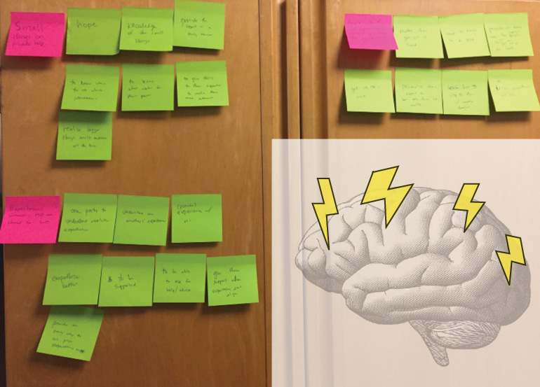

Seattle, WA
August 31, 2018
Role + Team
This project was completely solo. I reached out to Affect Mental Healthcare, a startup incubator from Harvard, because their mission and work resonated with me.
Challenge
I was given the freedom to choose my topic such that it was relevant and helped Affect align their innovation with real needs. One in five adults in the U.S. have experienced mental illness in a given year - the size of those affected is exponential.
Outcome
I studied people with mental illness and their supporters to determine supporter needs. I synthesized findings, insights, and needs for future solutions in the mental healthcare space and returned a comprehensive report to Affect.
Side note: After all my interviews, my dorm room was completely filled with sticky notes.
Empathy map from one interview
Clustering by theme
Supporters
Supportees
Focusing on Supporter findings, I asked ‘why’ repetitively to get to my insights:
From the insights, I brainstormed then converged Supporter needs

We met ... We were amazed to realize ... It would be gamechanging to ...
My hope is that these needs and point of views can be used to reassess the mental healthcare space, and provide supporters with the help they deserve. Supporters are a largely neglected part of the mental healthcare space, yet carry a large burden. With streamlined goals for this user group, proper solutions are possible.
For a deeper dive into the project with process information, click here.